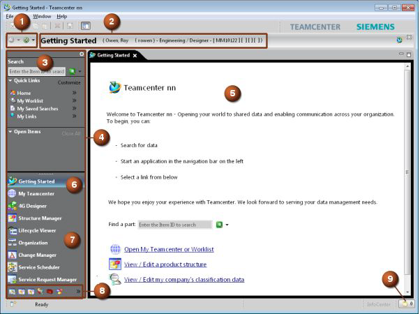

One of Four column
Teamcenter basics focuses on the Teamcenter rich client, a platform-independent client
implementation (Java application) for users who interact frequently with Teamcenter. The rich client
runs on client hosts and serves as a gateway to your company's product information.
Two of Four column

Three of Four column
When a site requires both a soft certificate and a smart card authentication to log on, you are initially
prompted to select which certificate to use for authentication of a two-way Secure Sockets Layer
(SSL) configured environment.
In the rich client, when the soft certificate is selected the logon proceeds using the soft certificate,
but if the smart card is not inserted in the reader the logon process may still prompt users to insert
their smart card. Canceling this prompt causes it to display again, but canceling it a second time
allows the logon to proceed successfully using the soft certificate.
Four of Four column